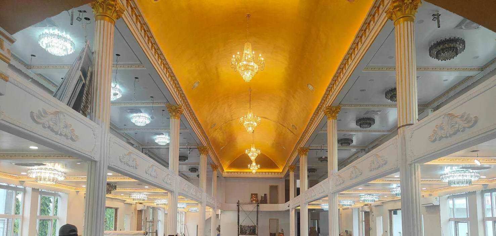
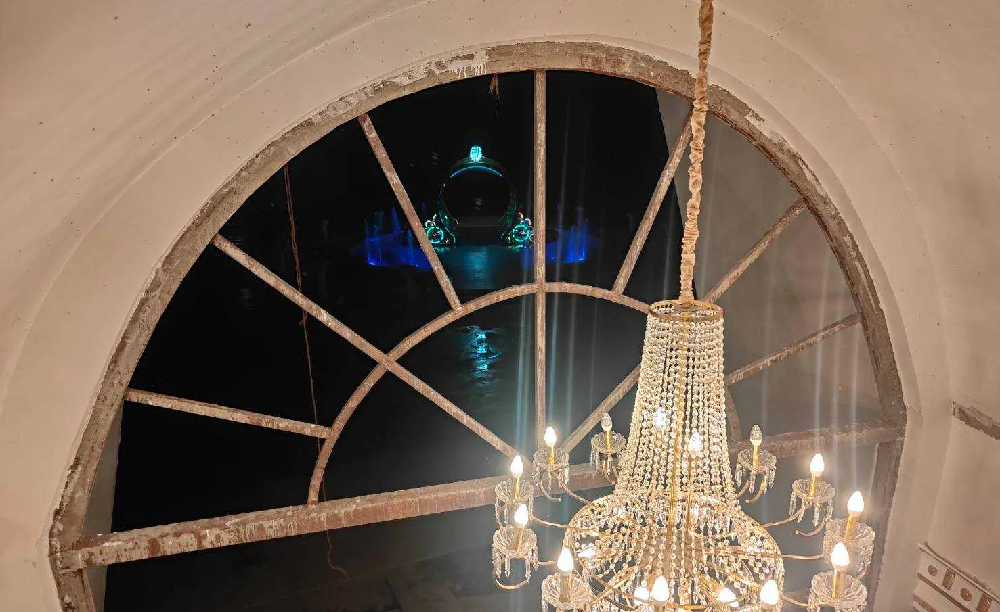
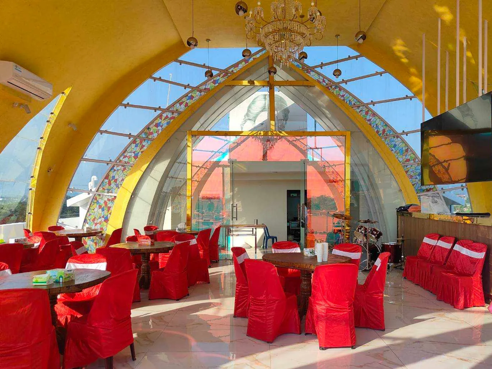
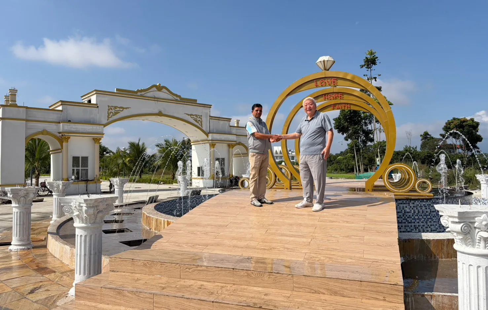
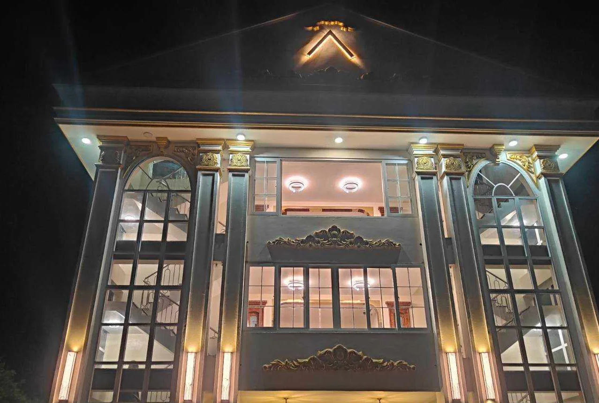
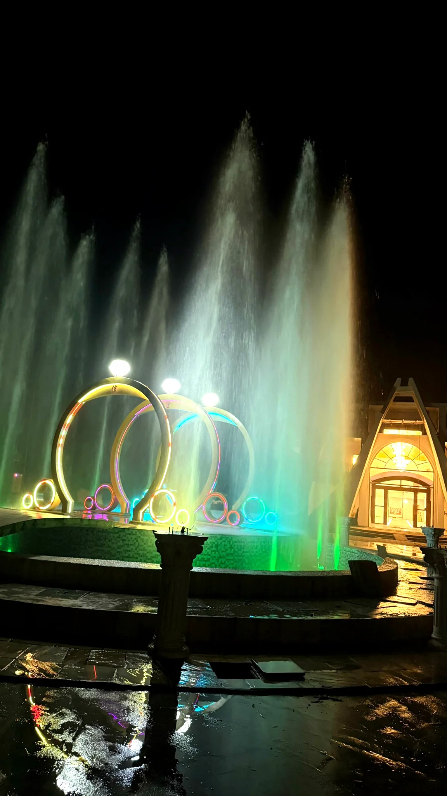
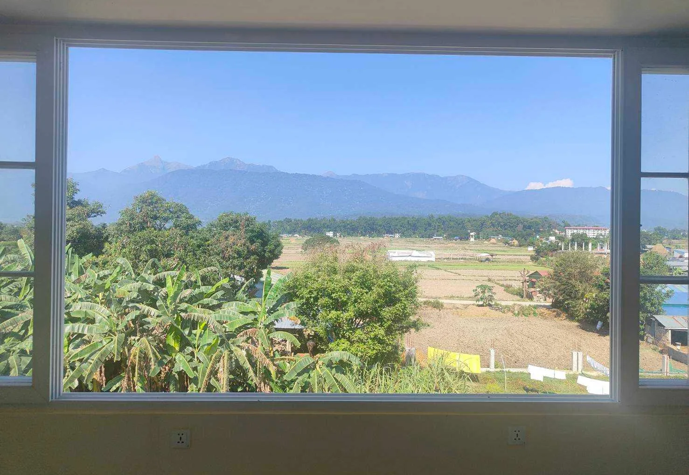

日照金山的光
金色陽光映照喜馬拉雅雪峰，象徵一生重要時刻的榮耀、祝福與光彩。
 GOLDEN HIMALPALACE · CHITWAN, NEPAL
GOLDEN HIMALPALACE · CHITWAN, NEPAL
THE GOLDEN HIMAL STORY
Golden Himal Palace 的名字，來自喜馬拉雅山峰映照晨光的景象。在尼泊爾奇旺，這份靈感延伸成一處融合宴會空間、特色建築與庭園水景的相聚之地，也開啟 Golden Himal Voice 2027 的音樂篇章。

當晨光灑落喜馬拉雅雪峰，山巒彷彿披上一層金色。這幅「日照金山」的意象，逐漸成為 Golden Himal Palace 品牌故事的起點。
金色陽光映照喜馬拉雅雪峰，象徵一生重要時刻的榮耀、祝福與光彩。
取自喜馬拉雅的山形意象，讓品牌與尼泊爾的土地、自然和文化相互呼應。
2026年8月25日，品牌由 Plaza 正式更名為 Palace，表達對婚宴、文化活動與溫暖款待的期待。
Golden Himal 的想像，從一個名字走進真實的奇旺風景。溫暖的象牙白與金色線條、挑高的宴會廳、可欣賞自然景觀的休憩空間，讓建築不只是一個背景，而成為人們相聚時的記憶。
這份期待也延伸到音樂。Golden Himal Voice 2027 希望讓來自尼泊爾各地的歌聲被更多人聽見，讓重要的相遇，從場地走向舞台。
從金色拱頂下的宴會空間，到午後透光的景觀餐廳，再到庭園噴泉與夜色中的建築，走近 Golden Himal 的不同面貌。






本頁以現場實拍照片為主，僅作網頁所需的裁切、適度明暗整理及壓縮。部分空間仍在整理中，實際開放與活動安排以正式公告為準。
從婚宴與歡聚的空間，延伸到屬於青年歌聲的舞台。Golden Himal Voice 2027 邀請尼泊爾各地的歌唱愛好者一起參與。了解年度賽程與參賽方式，讓下一段故事從你的聲音開始；實體活動地點將另行公告。
探索 Golden Himal Voice 2027